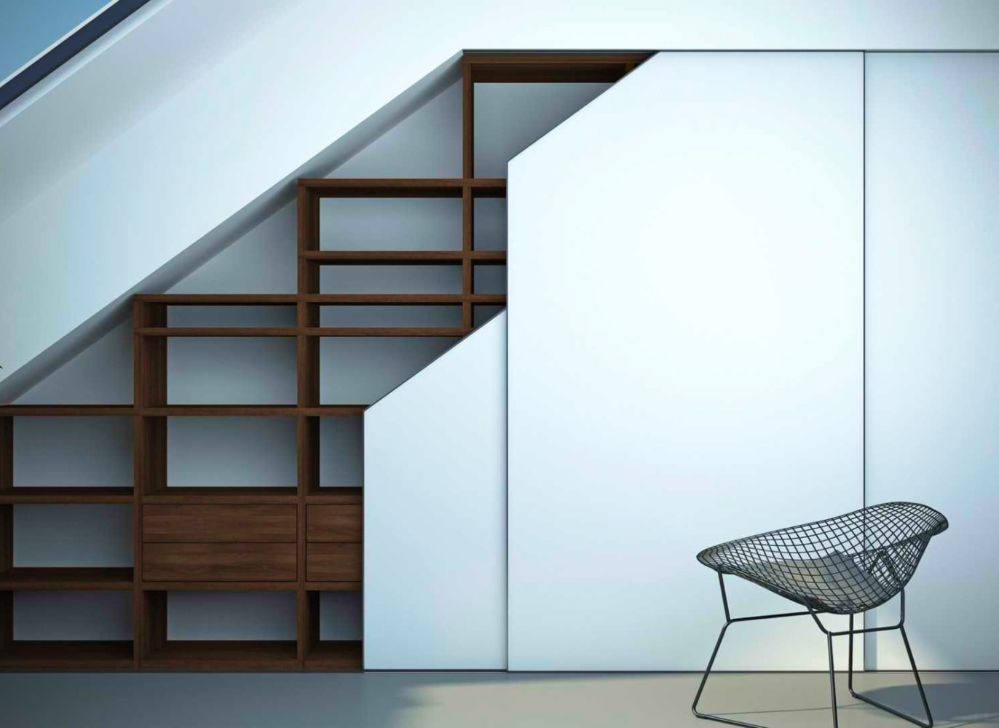

<% var data = {

  title: 'Презентация систем',
  status: true

} %>

<%= _.template(require('./includes/header.html').default)({data}) %>

<!-- Главный блок -->

<% var main = {

  height: false,
  img: 'presentation-bg',
  title: 'Презентация систем'

} %>

<%= _.template(require('./includes/main.html').default)({data, main}) %>

<!-- Системы -->

<section class="container flex flex-col gap-5">
  <% for (var i = 0; i < 4; i++) { %>
  <div class="ease-in-out duration-4 anim anim--up" data-anim="hidden">
    <div class="card lg:flex-row lg:items-stretch lg:justify-between xl:gap-5 xl:py-4">
      <div class="system-slider relative w-full lg:max-w-[470px] xl:max-w-[690px]">
        <div class="swiper h-full">
          <div class="swiper-wrapper">
            <% for (var j = 0; j < 4; j++) { %>
            <a class="swiper-slide pack pack-rect-md xs:pack-rect-sm lg:pack-rect-md bg-grey lg:h-full" data-fancybox="system-<%= i %>" href="img/pictures/system-img.jpg">
              <div class="loader">
                <span class="loader-progress">
                  <svg class="loader-icon icon">
                    <use xlink:href="img/icons.svg#loader">
                  </svg>
                </span>
              </div>
              <picture>
                <source srcset="img/pictures/system-img.webp" type="image/webp">
                
              </picture>
              <div class="flex items-center justify-center absolute inset-0 bg-black font-extralight text-white text-center text-48 bg-opacity-30 opacity-0 hover:opacity-100 duration-2">+</div>
            </a>
            <% } %>
          </div>
          <div class="swiper-pagination left-0 right-0 bottom-4 text-white mx-auto"></div>
          <button class="swiper-button-prev btn btn-dark btn-fade absolute -left-9 xs:left-4 text-white text-22 rounded-max w-[76px] h-[76px] xs:w-[42px] xs:h-[42px]" data-waved="light">
            <svg class="icon text-30 xs:text-20 ml-6 xs:ml-0">
              <use xlink:href="img/icons.svg#arrow-left">
            </svg>
          </button>
          <button class="swiper-button-next btn btn-dark btn-fade absolute -right-9 xs:right-4 text-white text-22 rounded-max w-[76px] h-[76px] xs:w-[42px] xs:h-[42px]" data-waved="light">
            <svg class="icon text-30 xs:text-20 mr-6 xs:mr-0">
              <use xlink:href="img/icons.svg#arrow-right">
            </svg>
          </button>
        </div>
        <div class="flex items-center absolute z-1 left-5 right-5 -bottom-16 md:left-2 xl:left-4 md:bottom-8 xl:bottom-4 bg-white shadow-lg md:shadow-none md:max-w-max mx-auto md:mx-0 py-4 px-8 md:py-6">
          <button class="btn btn-dark btn-fill text-20 rounded-max w-[55px] min-w-[55px] h-[55px] mr-4" data-waved="light" data-fancybox href="https://www.youtube.com/watch?v=OOih21EjgW0">
            <svg class="icon ml-1">
              <use xlink:href="img/icons.svg#play">
            </svg>
          </button>
          <div class="flex flex-col">
            <span class="font-normal text-primary text-18 leading-1 mb-1">Видео</span>
            <span class="font-normal text-18 leading-1">Производства</span>
          </div>
        </div>
      </div>
      <div class="card-content items-start w-full max-w-[590px] pt-24 pb-8 px-4 md:pt-6 md:pb-6 md:px-10">
        <h2 class="font-normal text-22 xs:text-26 md:text-32 leading-3 mb-5 xl:mb-8">Мансардные системы</h2>
        <p class="font-normal text-14 xl:text-16 leading-5 mb-10">
          Интегрированные мансардные системы предлагают непревзойденный уровень комфорта, эффективности и функциональности для вашего подшивного пространства. <br>
          <br>
          Совмещая инновационные технологии с утонченным дизайном, эти системы предлагают ряд преимуществ, которые помогут вам создать идеальную обстановку в вашей мансарде.
        </p>
        <button class="btn btn-dark btn-lg btn-contur btn-active btn-swipe uppercase w-full xs:w-auto mt-auto px-4 xs:px-7" data-waved="light">
          Подробнее о системе
          <svg class="icon text-14 ml-2">
            <use xlink:href="img/icons.svg#arrow-btn">
          </svg>
        </button>
      </div>
    </div>
  </div>
  <% } %>
</section>

<%= _.template(require('./includes/footer.html').default)({}) %>